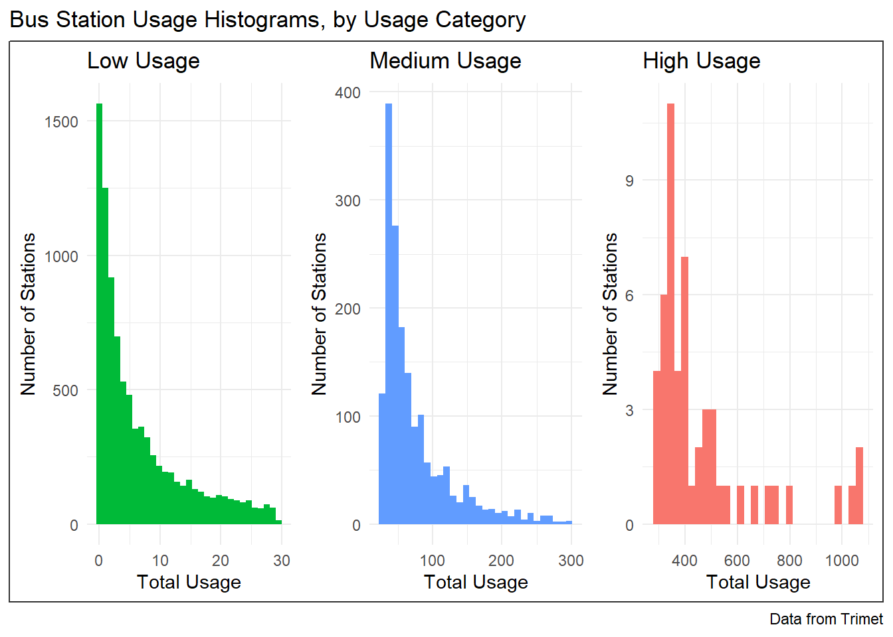

Methods
Data Collection and Manipulation
PDF Data Extraction and Webscraping
Data used for this project was available publicly through TriMet’s website, though in several different forms. This required a number of ingestion strategies.
Usage data was provided in a number of quarterly report PDFs on the TriMet website, which were then ingested and processed to extract the data. Each page in the PDF represented a single route, on a single day, going a single direction. It listed each station along the path, with its usage numbers over the entirety of Spring 2025. Trimet only releases their usage numbers for Spring and Fall, so this is effectively half a year’s worth of data. The PDFs were originally partitioned into Weekday, Saturday, and Sunday documents, but we would eventually combine the Saturday and Sunday schedules into a single “weekend” category.
Information about TriMet schedules was, however, slightly more complicated. Schedules as posted on the TriMet website under their Schedules tab only listed a small subset of the station stops that are present in the usage reports. Thankfully, TriMet also has their schedules listed by station, searchable by station ID number. This meant that once a list of IDs had been collected from the PDF reports, those IDs could be cross-referenced with the station schedules to obtain the raw schedule data for our many stops of interest, rather than a tenth of them.
Database Construction
The data was organized into four tables: stations, routes, schedule, and usage. Even though the schedules and usage were already separated, we needed to ensure that the route names, station names, and station ids all matched between files. For these reasons, we used an R script to prepare the data for ingestion into the Postgres database. The output was another four csv files that would each correspond to one of the database tables and could be copied in directly. Below (Figure 3) is an Entity Relationship Diagram showing our database organization:
!(erd.png) Figure 3: Entity Relationship Diagram for the database constructed in this project.
Stations and routes each have their own table, and are connected by two junction tables, schedule and usage. Each route is defined as a series of stations going a specific direction on a specific day. The usage table gives a total usage statistic for a specific station on a specific route. Alternatively, you can use the usage_id to select a station-route combination. This is useful within the schedule table, where the same route_id and station_id can have multiple arrival times in a schedule. This ensures third normal form because each table has a primary key and each non-key attribute depends solely on the key.
Feature Engineering
Each station has a large number of arrival times from a varying number of routes. However, arrival time alone makes for a poor feature. In pursuit of better features, a number of values were engineered from the schedule data for each station stop: the number of unique routes that stop at the station, the earliest and latest times the station is used, the number of vehicles that stop at the station over the course of the day, and the average number of minutes separating arrivals at the station. These values are all calculated for each station on both weekdays and weekend days. This was done overall by selecting the arrivals at each station on a given day and counting or otherwise manipulating the data into the features of interest. The total usage number sums for each station were also calculated at this stage, since usage information was originally provided at the route level for each station.
Statistical Modeling
This project used Poisson regression to model station usage as a function of the engineered features. The log of the usage values had to be used, as there are a number of TriMet routes (specifically, the MAX lines) that have usage numbers that could be considered outliers, while still being important data points in our analysis.
It’s possible that Poisson regression is not the correct statistical model to use for our data, since one of its assumptions is equidispersion. Due to the strength of the MAX lines, our data is heavily right skewed with a wildly differing mean and variance.
Machine Learning
This project used a number of machine learning models in an attempt to predict station usage numbers from the engineered features described earlier in this paper. The models investigated increased in complexity from standard linear regression through a variety of Support Vector Machine kernels to random forest regression. Random forest models were determined to have the best performance on this dataset, and thus were chosen to conduct a more in-depth analysis. Principal component analysis (PCA) was also used, for a small gain.
Because of the distribution of the usage data, a number of models were produced: one model covering the whole dataset, as well as sub-models for four determined data categories. As can be seen in Figure 3, usage values are a very uneven distribution.
Figure 3: Usage distributions for each station type. Note that the y-axis (Number of Stations) is not fixed, and that there are many more bus stations than MAX or WES Stations. There are only 6 WES stations in this dataset, and as such they were combined with the bus stations in the analysis.
The libraries used for this analysis were not able to find successful regressions for log-transformed usage data, which meant the data was split into four sub-categories: the data for MAX stations, as well as three categories of bus and WES station usage data (low, medium, and high). The distributions of the bus station data are shown in Figures 4 and 5, below. Low-usage bus stations are the majority of the data in this dataset, defined as stations with usage numbers between 0 and 30. Medium-usage stations have usage numbers between 30 and 300. Finally, there are a handful of stations with usage numbers over 300, which were filed as high-usage stations. These high-usage stations would commonly be considered outliers, but they are also the stations that the most people are using in the TriMet system, so it did not feel right to exclude them from the analysis.

Figure 4: Usage histograms showing the constructed bus usage categories. Note the y-axis (Number of Stations) is not fixed, and that the majority of the data is in the low-usage category.
Figure 5: Usage boxplots showing the constructed bus usage categories. Note the scale is not fixed.
As mentioned, random forest models were the main models used in this project. These random forests were limited to 10 trees and a tune length of 5, and trained using 3-fold cross-validation. The inputs given to each model as independent variables were the number of unique routes that stop at the station, the earliest and latest times the station is used, the number of vehicles that stop at the station over the course of the day, and the average number of minutes separating arrivals at the station, as well as a Boolean value for day of the week. In cases where PCA was used, all PCA transformations of these variables were used as inputs to the model. The models discussed in this paper will be those trained on PCA values, as there was found to be slight improvement when PCA was used over the raw values. The exception to this rule is the high-usage bus station data, as it was a small enough dataset the PCA transformations had no effect.